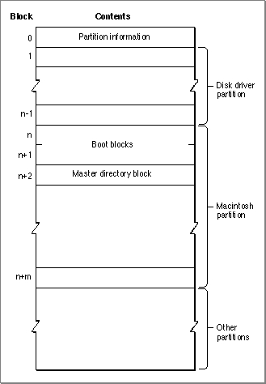
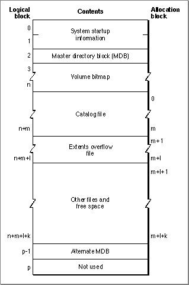

Disk and Volume Organization
A disk is a physical medium capable of storing information. Examples of disks include 3.5-inch floppy disks, SCSI hard disks and CD-ROM discs, and even RAM disks. A SCSI disk may be divided into one or more partitions. A partition is simply part of a disk that has been allocated to a particular operating system, file system, or device driver. For example, you can partition a single SCSI disk into both Macintosh partitions and A/UX partitions. The Macintosh partitions are typically used to hold Macintosh volumes. An A/UX partition can contain an A/UX file system, but it can also be used as a paging area for virtual memory or as a storage area for autorecovery files.The information describing the division of a SCSI disk into partitions is contained in the disk's partition map, which is always located in the first physical block (512 bytes) on a disk. The partition map specifies the first and last physical blocks in each partition, as well as additional information about the partition (such as its type). The exact structure of a partition map is described in the chapter "SCSI Manager" in Inside Macintosh: Devices.
Often the first partition on a SCSI disk, following the partition map, is the driver partition that contains the actual device driver used to communicate with the disk. (There is, however, no requirement that the driver partition be the first partition on a disk.) Figure 2-4 illustrates a typical organization of partitions on a disk.
A partition can contain at most one volume. A volume is a single disk partition that contains both file data and the file and directory information necessary to maintain the appropriate data organization or file system. For example, a volume can contain a Macintosh, ProDOS, MS-DOS, or A/UX file system structure. Notice in Figure 2-4 that a Macintosh volume occupies only part of the entire physical disk, and that there can be multiple partitions (both Macintosh volumes or other types of partitions) on a given disk.
The remainder of this section describes only HFS volumes, that is, Macintosh file systems organized using the hierarchical file system (HFS) implemented on the Macintosh Plus and later models.
- Note
- The disk organization illustrated in Figure 2-4 does not apply to Macintosh 3.5-inch floppy disks. Because each floppy disk is one volume, there is no need for a disk partition map. Also, there is no device driver partition on a floppy disk.

Each HFS volume begins with two boot blocks. The boot blocks on the startup volume are read at system startup time and contain booting instructions and other important information such as the name of the System file and the Finder. Following the boot blocks are two additional structures, the master directory block and the volume bitmap.
The master directory block contains information about the volume, such as the date and time of the volume's creation and the number of files on the volume. The volume bitmap contains a record of which blocks in the volume are currently in use.
Figure 2-4 Organization of partitions on a disk

The largest portion of a volume consists of four types of information or areas:
The general structure of an HFS volume is illustrated in Figure 2-5.
- applications and data files
- the catalog file
- the extents overflow file
- unused space
Figure 2-5 Organization of a volume

All the areas on a volume are of fixed size and location, except for the catalog file and the extents overflow file. These two files can appear anywhere between the volume bitmap and the alternate master directory block (MDB). They can appear in any order and are not necessarily contiguous.
The information on all block-formatted volumes is organized in logical blocks and allocation blocks. Logical blocks contain a number of bytes of standard information (512 bytes on Macintosh-initialized volumes). Allocation blocks are composed of any integral number of logical blocks and are simply a means of grouping logical blocks in more convenient parcels. The allocation block size is a volume parameter whose value is set when the volume is initialized; it cannot be changed unless the volume is reinitialized.
To promote file contiguity and avoid fragmentation, space is allocated to files in groups of allocation blocks, or clumps. The clump size is always a multiple of the allocation block size, and it's the minimum number of bytes to allocate each time the
Allocatefunction is called or the physical end-of-file is reached during a write operation. The clump size is specified in the catalog information for a file; you can determine the clump size using thePBGetCatInfofunction.The rest of this section describes in detail the structure of the boot blocks, the master directory block, and the catalog and extents overflow files. It also describes the general structure of a B*-tree, because the catalog and extents overflow files are both organized as B*-trees.